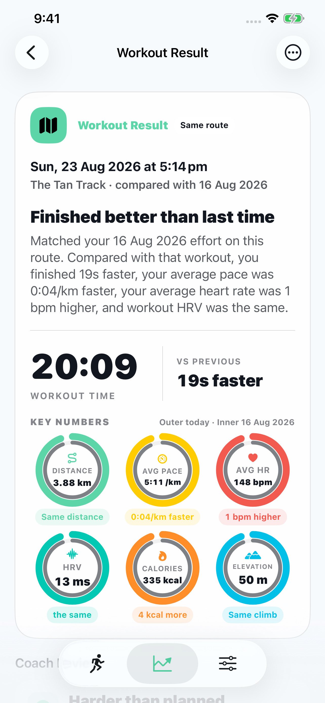
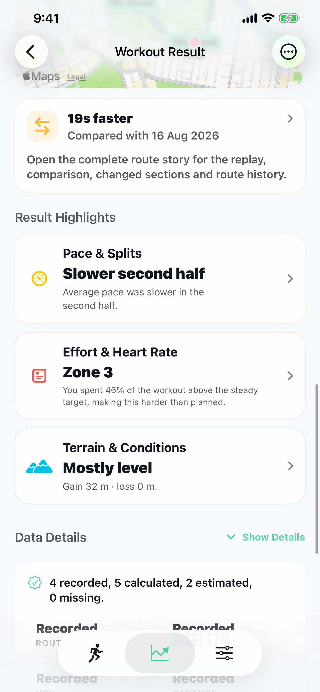

01
Getting started
Start and finish a workout
Choose what you are doing, decide whether you want a route, and start recording.
Record your first workout Activity, route, goal and start
What it does
Records your time, GPS route, distance, pace or speed, elevation and available sensor data.
- 1
On the start screen, choose Walking, Running, Cycling, or another available activity.
- 2
Tap Route if you want to follow a saved route. Leave it automatic if you simply want to record where you go.
- 3
If a heart-rate monitor is connected, tap Goal to choose the effort you want. Otherwise, no goal is required.
- 4
Tap Start Workout and wait for the countdown.
- 5
During the workout, swipe the bottom control to open Workout Options. Choose pause, resume, finish, or discard.
The live map, elapsed time and your chosen workout metrics. Heart rate and effort guidance appear only when relevant data is available.
Choose or build a structured session Warm-up, work, recovery and cool-down
- 1
Choose the activity on the start screen, then tap Session.
- 2
Choose a session under Quick Start, select a saved session, or tap the plus button to create one.
- 3
When building, add warm-up, work, recovery or cool-down steps. Choose time, distance or manual completion, add a target if useful, and reorder steps when the sequence needs adjusting.
- 4
Save and select the session, then start the workout normally.
- 5
Follow the current step and remaining time or distance. Use the skip control when it is sensible to move on.
The current step, target and progress during the workout, with haptic and optional audio cues when steps change.
02
Routes
Follow, repeat and compare routes
A route becomes more useful when Trail IQ can connect today’s workout with an earlier effort of the same activity type.
See what Trail IQ can show when you compare workouts on the same route.
Choose a route Automatic or a route you select
Before you start
Location access must be enabled so Trail IQ can find nearby routes and follow your position.
- 1
From the start screen, tap the Route control.
- 2
In Choose Route, select Automatic route to let Trail IQ use a nearby match, or choose a specific saved route.
- 3
Check the route line on the map and return to the start screen.
- 4
Start near the route and begin your workout.
The selected route appears on the map. During the workout, Trail IQ shows your progress and remaining distance when the route has a clear finish.
Read what is coming on a familiar route Climbs, recoveries and personal patterns
- 1
Select a saved route with several comparable workouts of the same activity type.
- 2
Open the route briefing before starting and look for Coming Up.
- 3
Read the route facts first, then any personal history explaining where you often slow, recover or finish strongly.
- 4
Use the suggestion as context for today’s workout rather than a compulsory target.
A short ranked list of meaningful upcoming sections. Trail IQ does not show every bend or every small pace change.
Use Today's Strategy on a familiar route Your history, today's goal and the route ahead
Before you start
You need at least five comparable workouts of the same activity on the route. Choose an effort goal; an open workout does not generate a personal strategy.
- 1
Open Results > Routes, choose the familiar route, and tap Start Route to open Ready.
- 2
Choose the effort goal you intend to follow. Heart-rate goals need a connected monitor.
- 3
Read Today's Strategy for the opening approach and the supported route actions.
- 4
Check Expected finish when a range is available and read Success today. Open Why this strategy to see its evidence.
- 5
Start the workout. Follow the route and the current guidance; the suggested approach can adapt as reliable progress and fresh heart-rate data become available.
Save and reuse a completed route Turn a recorded path into a named route
- 1
Finish a workout that recorded a GPS route.
- 2
On the Workout Result, tap Save Route.
- 3
Give the route a short name you will recognise.
- 4
Next time, open Choose Route and select it from your saved routes.
The route appears in the Routes library and can be assigned to future workouts.
Compare repeated workouts See where today changed
Before you start
You need an earlier workout of the same activity type on the same route.
- 1
Choose or automatically match the route, then complete the workout normally.
- 2
Open the saved Workout Result.
- 3
Use Route Story for the time comparison, gap chart, section changes and route history.
- 4
Tap Full Map to inspect the completed route and available overlays.
Time and pace differences against a matching earlier effort, with heart-rate differences only when both workouts contain heart-rate data.
Use a Live Ghost Choose a useful reference for today
Before you start
You need an assigned route and an earlier workout of the same activity type with usable route data.
- 1
Tap Route and select a route in Choose Route.
- 2
Turn on Live Ghost.
- 3
Under Ghost Opponent, choose Fastest on route, Latest on route, or Choose workout.... Additional choices appear only when the route history supports them.
- 4
Start the workout. Follow your own marker and the ghost marker on the map.
The ghost’s map position and whether it is ahead or behind. The wording always describes the ghost’s position relative to you.
Finish automatically at the route end Let Trail IQ conclude a selected route
- 1
Open Settings, then Workout Setup.
- 2
Turn on Finish at Route End.
- 3
Select a route with a defined finish and start near its beginning.
- 4
Complete the route. Trail IQ checks that you have reached and moved through the finish area before ending.
A confirmation that the route ended and the workout was saved, followed by the Workout Result.
03
Heart rate and sensors
Connect only the data you use
Heart rate, cycling metrics and running cadence appear only when compatible hardware and permissions provide them.
See how Trail IQ combines Bluetooth heart rate with route context.
Connect a Bluetooth heart-rate monitor Pair, connect and confirm live data
Before you start
Wear or activate the monitor and make sure Bluetooth is enabled on your iPhone. Some monitors must also be configured to share their live heart-rate feed with other apps.
- 1
Open the monitor manufacturer's app. If available, enable Broadcast Heart Rate, HR Sharing, Share with Other Apps, or Dual Bluetooth. The exact name varies by brand.
- 2
In Trail IQ, open Settings, then Devices & Health.
- 3
Tap Manage Devices, then scan for monitors.
- 4
Select your monitor when it appears and wait for Connected.
- 5
Return to the start screen and confirm that the monitor pill shows live heart rate instead of No monitor.
Live beats per minute, a heart-rate zone and heart-rate goal choices. Workout HRV appears later only when the monitor supplies compatible beat-to-beat intervals.
Choose a heart-rate goal Recovery, Easy Aerobic, Steady Aerobic or Hard Effort
- 1
Connect your heart-rate monitor before starting the workout.
- 2
Tap Goal on the start screen.
- 3
Choose Recovery, Easy Aerobic, Steady Aerobic, or Hard Effort.
- 4
During the workout, use the up arrow, down arrow or equals sign to adjust your effort.
An up arrow means increase effort, a down arrow means ease back, and the equals sign means you are in the intended range.
Connect cycling sensors Wheel speed, cadence and power
- 1
Wake the sensor, then open Settings, Devices & Health, and Manage Devices.
- 2
Tap Scan for Sensors and connect the cycling speed/cadence or cycling power device.
- 3
For wheel-derived speed and distance, enter the wheel circumference shown under Cycling Wheel.
- 4
For power zones, enter a measured FTP under Cycling Power.
- 5
Choose Cycling on the start screen. Available speed, cadence and power tiles appear as live metric choices.
Show running cadence and active steps Supported iPhone Motion data
- 1
Choose Running on a supported iPhone and allow Motion & Fitness access when asked.
- 2
Open the live metric picker and select Run Cadence when it is available.
- 3
Start moving and allow a short moment for iPhone Motion to establish a current reading.
- 4
After the workout, open Pace & Splits to review average cadence, peak cadence, active steps and source.
- 5
If the selected comparison workout also recorded running cadence, read the comparison rings. With usable route and cadence samples in both runs, Cadence Over Route compares their traces from start to finish.
04
Coaching cues
Know what the cues are telling you
Choose distinct tones or tones followed by short spoken guidance. Both are designed to mix with music or podcasts.
Set up coaching cues Route, segment and heart-rate guidance
- 1
Open Settings, then Coaching & Heart Rate.
- 2
Set Coaching Output to tones, or to tones with spoken guidance.
- 3
Turn on Route Guidance for prompts based on the selected route.
- 4
Turn on Segment Cues for climbs, recovery sections and upcoming sections when enough route history exists.
- 5
Choose a Cue Frequency of Low, Standard, or Frequent, then use Preview Coaching Audio to hear the selected output.
05
Results
Understand what happened
The first screen gives you the result. Open a highlight only when you want the detail behind it.


Read a Workout Result Answer first, details second
- 1
Read the top block for route identity, the main result, workout time and key numbers.
- 2
Read Coach Review for what went well and one practical next step.
- 3
Use Route Story to see the workout on the map.
- 4
Open a tile under Result Highlights for its focused report.
- 5
Open Data Details at the bottom to check sources, missing data and which values were calculated or estimated.
Only relevant sections appear. Heart rate, Workout HRV, conditions and comparisons stay hidden when the required data is unavailable.
Read pace, cadence and effort comparisonsFocused reports for movement and heart rate
- 1
Open Pace & Splits or Speed & Splits. The half-workout comparison uses the yellow outer ring for the first half and cyan inner ring for the second.
- 2
Read the trace and split bars. A marker on a split bar shows the selected prior workout's pace when that comparison is available.
- 3
For a run with Motion data, continue to Running Cadence. Compare steps per minute against the same route baseline when it also recorded cadence.
- 4
Open Effort & Heart Rate. A selected heart-rate goal highlights the target on the range rail and over-time chart. Zone distribution shows how the recorded time was spent.
- 5
Use Terrain & Conditions for elevation and recorded weather. Open Data Details for source and quality checks.
Read Training Load and Recovery Context Recent work and optional personal signals
- 1
Open Results and find Training Load.
- 2
Read the seven-day load beside the weekly average from the preceding 28 days.
- 3
Check the explanation for workout count, recent hard sessions, recovery gap and whether intensity came from heart-rate zones, workout goals or both.
- 4
If Apple Health is enabled and enough fresh history exists, read Recovery Context for resting heart rate, HRV and sleep against your own recent ranges.
- 5
Treat the suggested day as fitness context, not a medical assessment or compulsory plan.
Low, Normal, Elevated or Building baseline for training load, plus only the recovery signals that are fresh and supported by enough personal history.
Explore Route Story and the full map Move from the answer to the route story
- 1
Use Route Story for the overall time comparison, then the gap chart and section changes.
- 2
Tap Full Map to open the completed route at a useful map scale.
- 3
Choose the route, comparison, pace, heart-rate or elevation overlay when that data exists.
- 4
Read route history and the debrief when enough matching attempts support them.
06
Your data
Use Apple Health, files and local backups
Trail IQ keeps permissions, workout imports, individual exports and full backups separate so each action remains deliberate.
Learn how Trail IQ keeps personal training local-first and free from a social feed.
Enable Apple Health Permission, import and export are separate choices
- 1
Open Settings, then Devices & Health.
- 2
Turn on Enable Apple Health Features.
- 3
Tap Request Apple Health Permission and choose what iOS may read or write.
- 4
To bring existing workouts into Trail IQ, separately tap Import Recent Workouts From Apple Health.
- 5
Review the import preview before confirming anything.
Trail IQ shows what is available for import and merges recognised duplicates rather than deliberately creating another copy.
Import workout files GPX, TCX, FIT and supported Adidas exports
- 1
Open Settings, then Privacy & Data.
- 2
Under Imports, choose Import GPX, TCX or FIT Workouts, or choose Import Adidas Running Export for a supported Adidas archive.
- 3
Select the file in the iOS file picker and review the import summary.
- 4
Confirm the import. Trail IQ normalises supported data and checks for an existing workout before adding another copy.
- 5
Open Results or Routes to review imported workouts and any familiar routes they reveal.
A summary of workouts added, skipped as duplicates, or enriched with useful details that were missing from an existing record.
Back up, restore or delete data Keep control of local Trail IQ data
- 1
Open Settings, then Privacy & Data.
- 2
Scroll to Backups & Reset.
- 3
Tap Export All Data before changing phones, deleting data, or testing a restore.
- 4
Use Import All Data From Backup to restore a Trail IQ backup file.
- 5
Use the specific delete controls when you want to remove workouts, routes or tests, or choose the full reset only when you intend to start over.
Export one workout Share a GPX or TCX file
- 1
Open Results, then select the workout you want to take elsewhere.
- 2
Open the more menu and choose Export Workout.
- 3
Choose GPX Route + Sensors for a route-focused file or TCX Workout + Sensors for a workout-focused file.
- 4
Use the iOS share sheet to save or send the file.
Unlock or restore Full Access One purchase, no recurring subscription
When you need it
Five completed workouts are included. Full Access unlocks unlimited workout recording.
- 1
Open Settings, then Trail IQ Access.
- 2
Check the one-time price supplied by the App Store in your storefront currency.
- 3
Tap Unlock Full Access and confirm the purchase with Apple.
- 4
If you purchased previously, tap Restore Purchase using the same Apple Account.
Trail IQ confirms Full Access and removes the workout recording limit. The purchase does not renew monthly or annually.
07
Frequently asked questions
Quick answers about Trail IQ
The essentials about routes, sessions, sensors, training context, privacy and Full Access.
Does Trail IQ require an account?No account or public profile
No. Trail IQ does not require a Trail IQ account, public profile or social login.
Does Trail IQ upload workout and route data to Trail IQ servers?Local-first storage
No. Trail IQ does not upload your workout or route history to Trail IQ servers. Optional Apple Health and WeatherKit features use Apple services under their own permissions and terms.
Can Trail IQ compare workouts on the same route?Matching history required
Yes. Trail IQ recognises familiar routes and compares matching workouts of the same activity type when suitable history is available. Live Ghost is optional and does not control the comparison saved after a workout.
What is Route Memory?Your repeated-route patterns
Route Memory learns evidence-backed patterns from repeated workouts on the same route, including typical performance and recurring strong or difficult sections.
When does Today's Strategy appear?A selected goal and enough comparable history
Select a familiar route and an effort goal. Today's Strategy needs at least five comparable same-activity efforts and sufficient route evidence. It shows an opening approach, supported Protect, Hold or Push actions, and an expected finish range when available. Follow the strategy workflow.
Can I hide the Session selector?A simpler start screen
Yes. Open Settings > Workout Setup and turn off Show Session Selector. Your saved sessions remain stored. Turn the setting back on when you want to use them.
Can Trail IQ import old workouts?GPX, TCX, FIT and more
Yes. Trail IQ supports GPX, TCX and FIT workout files, supported Adidas Running export archives and optional user-initiated Apple Health import. Import checks help prevent duplicate workouts.
Can Trail IQ create structured workouts?Quick starts or your own session
Yes. Use a quick-start session or build reusable warm-up, work, recovery, repeat and cool-down steps using time, distance or manual completion. Supported sensor targets appear only when the required device is available.
What are Training Load and Recovery Context?Transparent recent context
Training Load compares the last seven days with the weekly average from the preceding 28 days and explains its inputs. Optional Recovery Context compares fresh permitted Apple Health resting heart rate, HRV and sleep data with your own recent ranges when enough history exists. Neither is a medical or opaque readiness score.
Can Trail IQ export an individual workout?GPX or TCX through iOS
Yes. A completed workout can be shared as GPX when route data exists or as TCX through the standard iOS share sheet. A Trail IQ backup remains a separate full-data action.
Does Trail IQ work without a heart-rate monitor?Heart rate is optional
Yes. GPS routes, time, distance, pace or speed, elevation, splits and route comparison work without a monitor. A compatible Bluetooth Low Energy monitor adds live heart rate, zones and related insights.
Does Trail IQ require a subscription?One-time Full Access purchase
No. Five completed workouts are included, then Full Access is available as a one-time, non-consumable in-app purchase.
Is Trail IQ a social fitness network?Personal, not public
No. Trail IQ has no social feed, public profile or public leaderboard model. It is designed to help you understand your own training history.
Something not working?
Move from learning to support.
Use the common checks or contact Trail IQ support. The app never sends your workout or health data automatically.